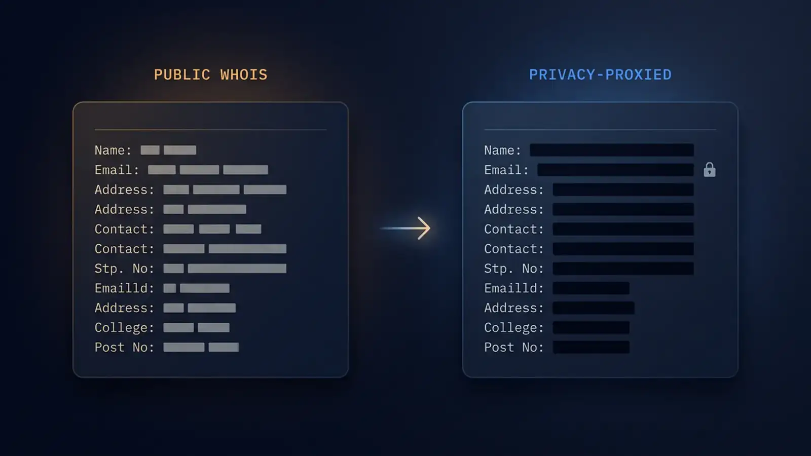
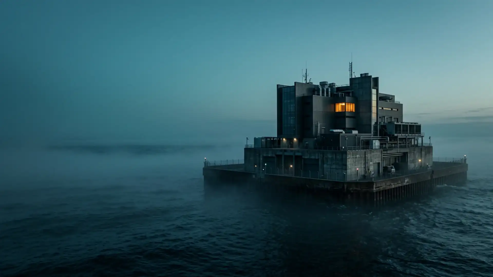
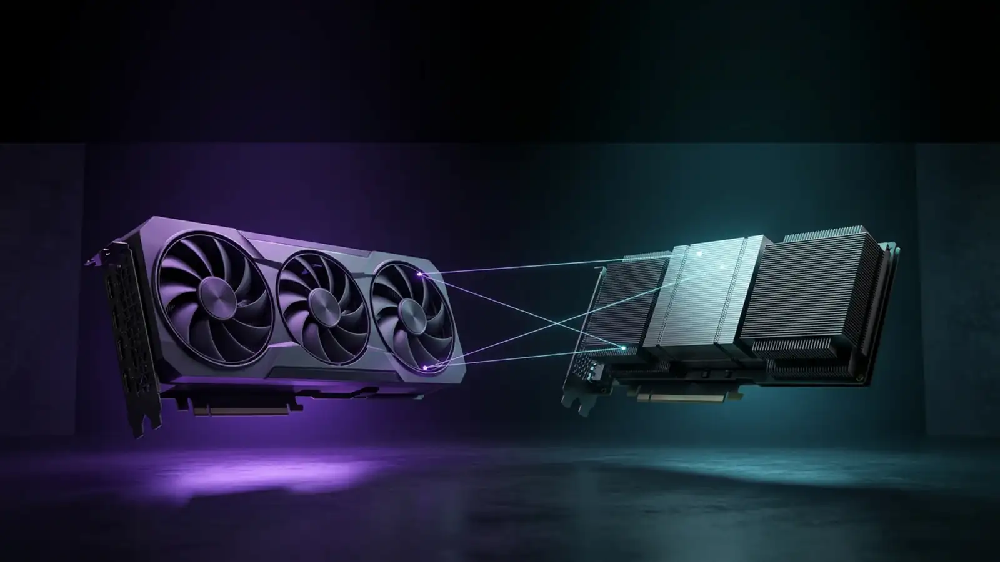
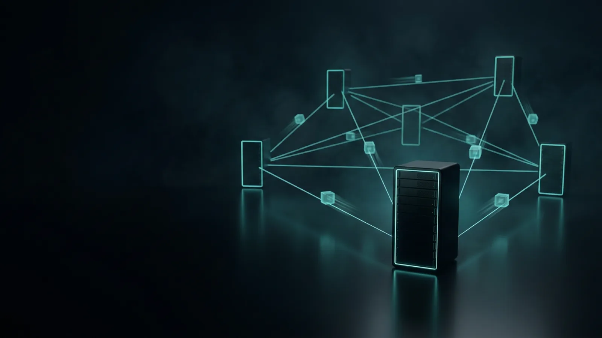

Privacy hosting guides
Operator-grade reads on the real decisions when you order offshore hosting: where to base your server, what hardware to pick, how to wire up your own VPN, which crypto to actually pay with, and how to keep both the server and the domain truly anonymous.
Eight guides for the real hosting decisions
Each guide is a focused 10-minute read that answers one operator-level question — no listicles, no fluff. Read them in order or jump to the one closest to your decision.

Editor's pickAnonymous Domain Registration with Crypto — 2026 Guide
A registered domain is a public declaration of an owner — unless you understand WHOIS, ICANN policy, TLD jurisdiction and payment privacy. This guide walks every layer from coin choice to subpoena-resistant defaults.
Best Countries for DMCA-Ignored Hosting in 2026
A practical rundown of the best jurisdictions for DMCA-ignored hosting — what the term actually means, the countries that genuinely qualify, what each one offers, and how to pick the right one for your project.
Best Offshore Hosting Providers in 2026: 12 Compared
We compared twelve offshore and privacy-focused hosting providers on the five things that decide whether a host actually protects you: what you must hand over at signup, how you can pay, how many jurisdictions you can spread across, how the host treats DMCA notices, and whether bare-metal hardware is available. Disclosure: we run AnonPort, so every attribute below comes from the providers' public documentation and the same criteria are applied to us.
Bulletproof vs Offshore Hosting — What's the Difference?
Bulletproof and offshore hosting get used interchangeably, but they describe two very different businesses with very different risk profiles. This guide draws the line clearly — and explains why, for almost everyone, offshore is the one you want.
How to Bypass DPI Censorship with Your Own VPS (2026 Guide)
A practical guide to bypassing DPI censorship with your own VPS — how deep packet inspection identifies a VPN without decrypting it, why a private endpoint outlives a blocklist wave, which of the five protocols that still work in 2026 suits China, Iran or Russia, and a full VLESS+REALITY deployment from a blank server.
How to Choose an Offshore Hosting Jurisdiction in 2026
Jurisdiction is the single biggest privacy lever in hosting — bigger than the server, the OS, or the payment coin. This guide walks the trade-offs so you can pick deliberately.
Crypto Node Hosting Guide — Run a Blockchain Node on a VPS
A practical guide to hosting your own crypto node — why running a full node matters, how to size a server for different chains, the setup approach, and how a no-KYC offshore host keeps the node private.
Crypto Payments for Hosting: Monero vs Bitcoin vs USDT
Coin choice is a privacy decision, not just a UX one. Monero, Bitcoin and USDT each leak different things to different observers — and a privacy-friendly host can only protect what the coin itself protects.
DMCA-Ignored Hosting Explained: What It Really Means in 2026
"DMCA ignored" is one of the most Googled hosting terms and one of the most misunderstood. This guide draws the line between what the label actually delivers, what it does not, and which countries genuinely back it up.
The First Hour of VPS Hardening: A Checklist
Most compromised servers fall to opportunistic scans in their first days online, not to targeted attacks. This ordered checklist covers the first hour on a new VPS: SSH keys, a firewall, fail2ban, automatic updates, and attack-surface trimming.
Full-Disk Encryption on a VPS: LUKS Setup Guide
Disk encryption answers one question well and several others not at all. Here is how to set up LUKS on a rented server — an encrypted data volume, full-root encryption with dropbear remote unlock, or bare metal encrypted at install — and how to tell which of your threats it actually removes.
GPU Hosting for Stable Diffusion — Run Your Own Image Server
A practical guide to running Stable Diffusion on a rented GPU server — why self-host, how to size the GPU, getting a web UI running, and the cost and privacy comparison against hosted image services.
Hiding Your Origin Server IP: CDNs, Proxies & Leaks
Absorbing an attack and staying unfindable are two different problems, and the arrangement that solves one can quietly undo the other. What network-level filtering covers, what a CDN adds and costs, how origins actually get found — and how to check yours.
How to Buy a VPS with Bitcoin — Step-by-Step (2026)
Buying a VPS with Bitcoin is simpler than most people expect. This guide covers the whole process — acquiring BTC, picking a plan, paying the invoice and getting your server — plus what Bitcoin payment does and does not hide.

OperationsHow to Host a Tor Hidden Service (.onion Site) — 2026 Guide
A complete walkthrough for running a Tor hidden service — what an onion service is and why it is the strongest anonymous hosting there is, the setup from install to a live .onion address, and the discipline that keeps it anonymous.
How to Host a Website Anonymously — A Practical 2026 Guide
Anonymous hosting is not one switch but a stack of layers. This guide walks through each — identity-free account, crypto payment, anonymous domain, offshore jurisdiction, connection hygiene and content — so the website cannot be traced to you.
How to Pay for Hosting with Monero (XMR) — Step by Step
Everything you need to pay for a server in Monero: why XMR beats every other coin for payment privacy, how to acquire it without a paper trail, and the exact checkout steps from invoice to a live server.
How to Set Up a WireGuard VPN on a VPS — Step-by-Step Guide
A complete walkthrough for running your own WireGuard VPN on a VPS — why self-hosting beats a commercial VPN for privacy, every step from server install to a connected device, and the hardening that matters.
Is Offshore Hosting Legal? The Honest 2026 Answer
A clear, non-evasive answer to the question buyers ask first: what offshore hosting is, why it is lawful, the difference between the service and its misuse, and what separates a legitimate offshore host from a genuinely shady operator.
Is Offshore Hosting Truly Anonymous? An Honest Answer
"Anonymous hosting" is a promise plastered across the offshore market. This guide separates what a no-KYC provider genuinely removes from the identity trail — and which parts of your anonymity remain entirely your own job.
How to Migrate a Website to Offshore Hosting Without Downtime
Almost every painful migration is an ordering failure, not a technical one — a TTL lowered on the night instead of two days before, a certificate issued after the DNS change instead of before, a cron job left armed on a server that is no longer authoritative. This is the sequence that removes the downtime window entirely, plus the part generic guides skip: what the move permanently records about you, and what you can still do about it.
Offshore Mail Server Setup — Self-Host Private Email in 2026
A realistic guide to self-hosting email on an offshore VPS — why do it, what it genuinely takes, the all-in-one stacks that make it practical, the DNS records that decide deliverability, and the honest trade-offs.
Offshore Windows RDP for MT4 / MT5 / cTrader Forex Trading
Forex traders running MetaTrader 4, MetaTrader 5, cTrader, or custom Expert Advisors need a Windows machine that stays online 24/7, has low latency to their broker's server, and is not tied to the trader's personal identity when operating from a high-tax or trading-restricted jurisdiction. This guide covers the complete setup: jurisdiction selection, plan sizing, EA installation, broker latency, and the no-KYC checkout that matches the threat model.

BuyingRTX 4090 vs H100 for AI Inference (RTX 5090 Included)
Choosing the right NVIDIA GPU for self-hosted AI is not just a VRAM question. The RTX 4090 is the price/performance sweet spot for 7B–13B inference and image generation; the RTX 5090 (32 GB GDDR7) is the new middle tier for 27B–32B; the H100 SXM5 (80 GB HBM3) is for 70B-class workloads where memory bandwidth dominates. We walk through the trade-offs by workload class with throughput figures, $/token economics, and what fits into each AnonPort GPU tier.
 Operations
Operations
Seedbox Setup Guide — Build Your Own Private Seedbox in 2026
A practical guide to building your own seedbox — what a seedbox is and why self-hosting one beats a managed service, how to size the server, installing a torrent client with a web UI, and keeping it private.
How to Self-Host a Crypto Payment Gateway with BTCPay Server
A payment processor is not a one-percent fee. It is a third party that holds your money before you do, learns who your customers are, and can decide on a Tuesday afternoon that your business no longer suits it. Self-hosting removes that party completely: invoices, exchange rates, address generation and order webhooks all run on a server you rent. Here is what it actually takes — the disk it needs, the keys that must never be on it, and the honest limits of what it buys you.

OperationsSelf-Hosting Matrix: Federation, Metadata & E2EE Limits
A homeserver is not a private box that speaks chat — it is a replication node in a public network. What self-hosting Matrix genuinely fixes, what end-to-end encryption leaves in the clear, which implementation to run, and the operational decisions that are irreversible.
How to Self-Host an LLM on a GPU Server — 2026 Guide
A practical guide to running an LLM on your own GPU server — why it beats a hosted API for privacy and control, how to size the GPU to the model, the fastest way to get a model serving, and the real costs.
Self-Hosted VPN on a No-KYC VPS: WireGuard vs OpenVPN
A 30-day-old VPS in a friendly jurisdiction, paid in crypto, with WireGuard or OpenVPN on top — and you own the trust boundary. Here is how to choose between the two and what to harden.
Server OpSec — Staying Anonymous When You Run a Server
A practical operational-security guide for running a server anonymously — the leaks that catch people out, the discipline that prevents them, and how to keep an anonymous project genuinely separate from your real identity.
VPS DDoS Protection: Where Your Host Stops and Layer 7 Begins
Every hosting plan says “DDoS protection included”, and every one of them means the same narrow thing: the network absorbs floods measured in gigabits. The attacks that actually take small sites down are measured in requests per second, cost the attacker almost nothing, and arrive looking entirely legitimate. This guide draws the line between the two, shows how to tell within a minute which one you are in, and covers what genuinely holds on the side of the line that belongs to you.
VPS Backup Strategy: Encrypted, Off-Site, Restorable
No-KYC hosting removes the safety net along with the paperwork: no backups retained, data destroyed within 24 hours of termination, and no support path that ends in a recovered copy. This is the working plan — what to copy, where to put it, how to stop an attacker deleting it, and how to prove it restores.
VPS vs Dedicated Server for Privacy-Critical Workloads
A virtualised server shares CPU, memory and a hypervisor with strangers. For most workloads that is fine. For some, it is the wrong choice. This guide draws the line.
What Is No-KYC Hosting? Definition, Legality & How It Works
A plain-English explanation of no-KYC hosting: what KYC means, why most hosts demand it, how identity-free hosting works without your name or email, the legal picture, and what separates a real no-KYC provider from a merely privacy-flavoured one.
Missing a guide you would actually read? Tell us what to write next — Suggest a topic →